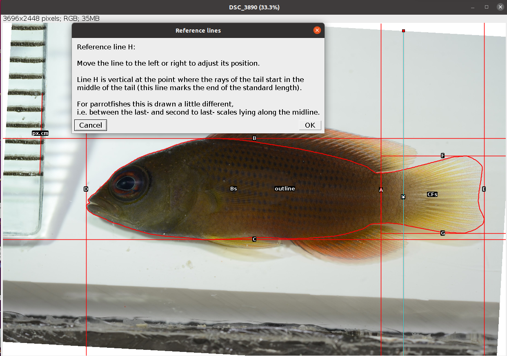
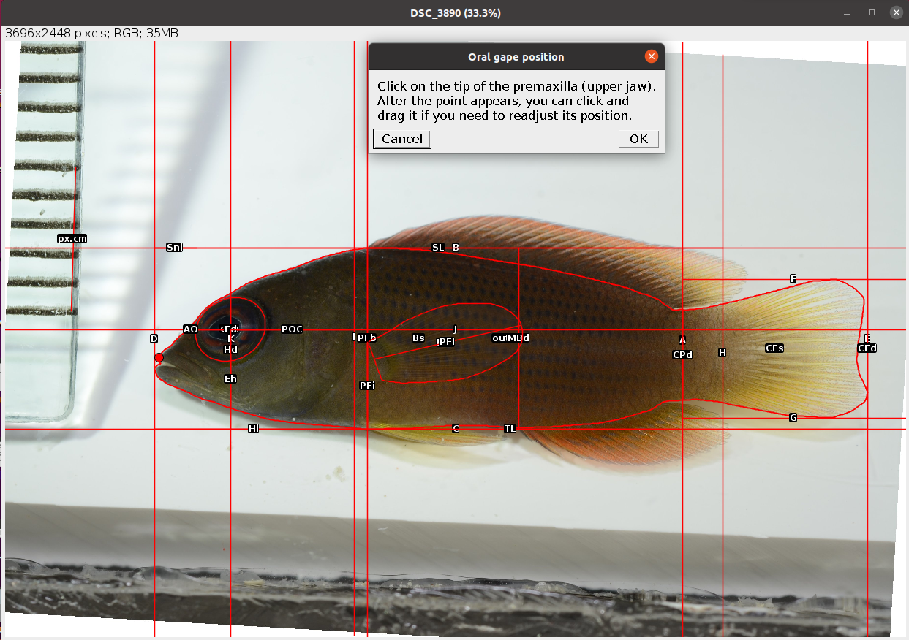

5 Main Traits
The Main Traits analysis is the workhorse of MorFishJ as it performs a complete morphometric characterisation of fishes. It requires the user input to trace the outline of the body and pectoral fin, and to position some reference lines (Figure 5.1, Table 5.1) and landmark points. The coordinates of these lines and points allow to extract 22 morphometric measurements described in Figure 5.2 and Table 5.2.

| Reference line | Description | User input |
|---|---|---|
| A | Vertical line at the narrowest point of the caudal peduncle | Yes |
| B | Horizontal line touching the highest edge of the body (excluding fins) | No |
| C | Horizontal line touching the lowest edge of the body (excluding fins) | No |
| D | Vertical line touching the most anterior tip of the body | No |
| E | Vertical line touching the most posterior tip of the caudal fin | No |
| F | Horizontal line touching the highest edge of the caudal fin | No |
| G | Horizontal line touching the lowest edge of the caudal fin | No |
| H | Vertical line at the base of the caudal fin (end of the vertebral column or posterior edge of the hypural plate). Parrotfishes (Labridae: Scarini) are an exception and the line should be placed between the last and second to last scale lying along the midline (FishBase) | Yes |
| I | Vertical line touching the posterior margin of the operculum | Yes |
| J | Horizontal line cutting the eye in halves | Yes |
| K | Vertical line cutting the eye in halves | Yes |
| L | Vertical line at the pectoral fin insertion | Yes |

| Code | Trait | Description | Reference |
|---|---|---|---|
| TL | Total length | Length from the most anterior point of the body (D) to the most posterior point (E) (excluding the caudal filaments) | FishBase |
| SL | Standard length | Length from most anterior point of the body (D) to the the base of the caudal fin (H) | FishBase |
| MBd | Maximum body depth | Body depth at the deepest part of the body (excluding fins). Measured as the vertical distance between B and C | Bellwood et al. (2014) |
| Hl | Head length | Horizontal distance from most anterior tip of the head (D) to the posterior margin of the operculum (I) | Barnett, Bellwood, and Hoey (2006) |
| Hd | Head depth | Head depth measured at the vertical of the orbit centroid along K | Villéger et al. (2010) |
| Ed | Eye diameter | Internal diameter of the orbit measured along J | Bellwood et al. (2014) |
| Eh | Eye position | Vertical distance from the orbit centroid (J × K) to the bottom of the body (K × C) | Toussaint et al. (2016) |
| Snl | Snout length | Horizontal distance from the anterior margin of the orbit to the tip of the snout (D) | Barnett, Bellwood, and Hoey (2006) |
| POC | Posterior of orbit centroid | Horizontal distance from the orbit centroid (J × K) to the posterior margin of the operculum (J × I) | Bellwood et al. (2014) |
| AO | Anterior of orbit | Horizontal distance from the anterior margin of the orbit to the anterior margin of the body along J (AO may be close, or equal to, zero in species with very anterior eyes) | Bellwood et al. (2014) |
| EMd | Eye-mouth distance | Distance between the orbit centroid (J × K) to the anterior tip of the premaxilla | Bellwood et al. (2014) |
| EMa | Eye-mouth angle | Angle between EMd and a horizontal line intersecting the tip of the premaxilla | Bellwood et al. (2014) |
| Mo | Oral gape position | Vertical distance from the tip of the premaxilla to the bottom of the body (C) | Toussaint et al. (2016) |
| Jl | Maxillary jaw length | Length from the tip of the premaxilla to the intersection between the maxilla and the mandible (i.e. the corner of the mouth) | Toussaint et al. (2016) |
| Bs | Body surface area | Area of a polygon drawn following the contour of the body excluding fins, and up to the narrowest point of the caudal peduncle | Bellwood et al. (2014) |
| CPd | Caudal peduncle depth | Measured at the narrowest point of the caudal peduncle along A | Villéger et al. (2010) |
| CFd | Caudal fin depth | Maximum depth of the caudal fin | Villéger et al. (2010) |
| CFs | Caudal fin surface area | Area of a polygon drawn following the contour of the caudal fin, with the anterior margin marked by a straight vertical line through the narrowest point of the caudal peduncle | Villéger et al. (2010) |
| PFs | Pectoral fin surface area | Area of a polygon drawn following the contour of the pectoral fin | Villéger et al. (2010) |
| PFl | Pectoral fin length | Length of the longest ray of the pectoral fin | Toussaint et al. (2016) |
| PFi | Pectoral fin position | Vertical distance from the upper insertion of the pectoral fin to the bottom of the body (C) | Toussaint et al. (2016) |
| PFb | Body depth at level of pectoral fin insertion | Body depth measured along L | Villéger et al. (2010) |
5.1 Analysis
Once the steps described in Section 2.2 are completed the screen will be populated with a number of windows:
- the ImageJ/Fiji main window
- the MorFishJ GUI
- a fish image (this is a duplicate of the raw image to prevent any modification)
- the ROI manager
- the
Set scaledialog
While the majority of the analysis is automated, there are a number of steps that require the user input:
Set the scale for the image as described in Chapter 3.
Adjust the image if necessary as described in Chapter 4.
Select the orientation of the fish (i.e., whether the fish is facing left or right) from a drop-down list. This step is important for the correct automatic placement of some reference lines and points.

- Select the fish outline following the instruction in the dialog. Trace a polygon around the body and caudal fin, excluding the dorsal, pelvic, and anal fins as in the example below. Also avoid including any portion of pectoral fin protruding from the body area. Once the selection is completed it can be adjusted as needed.
The points that define the selection can be moved. To add a new point to the selection press Shift and click on an existing point. To remove one point press Alt and click on the point. See Polygon Selection Tool.

- Position reference line A at the narrowest point of the caudal peduncle. After clicking
OKseveral automatic steps will split the outline in two, the body area (Bs) and caudal fin area (CFs), and add reference lines B-G.
- Position reference line H at the base of the caudal fin to mark the end of the standard length.

- Position reference line I at the posterior margin of the operculum.

- Trace an ellipse around the eye as in the example below (see Elliptical Selection Tool for specific instructions on how to use this tool). After clicking
OKtwo new reference lines (J-K) are drawn perpendicular intersecting at the eye centroid.

- Place a point at the insertion of the pectoral fin as in the example below.

After clicking OK reference line L appears passing through the selected point and 14 new traits are drawn and added to the ROI manager together with all reference lines.
- Select the outline of the pectoral fin as in the example below. After clicking
OKthis is saved in the ROI manager as PFs.

- Trace a line on the longest ray of the pectoral fin. After clicking
OKthis is saved in the ROI manager as PFl.

- Place a point at the tip of the premaxilla (upper jaw) as in the example below. After clicking
OKa new trait (Mo) is drawn and saved in the ROI manager.

- Place a point at the corner of the mouth.
The point should be placed at the intersection between the maxilla and the lower jaw (fish skull anatomy), not where the flesh of the upper and lower jaw meet! See the example below.
{kind=link}

After clicking OK the last three traits are drawn and saved in the ROI manager.
The analysis of the image is completed. In case of single image analysis a window named Traits containing all the results appears. This can be saved by clicking on File -> Save As.... All ROIs in the ROI manager can also be saved as a zip file by clicking on More >>> -> Save.... In case of multiple image analysis a new row will be added to the results file, the ROIs are saved in their directory, where also the rotated or straightened images are saved as .jpg files. The current image is closed and the next is opened. Repeat steps 1-13 for all images.
5.2 Results
The results file/table contains one row for each image and 25 columns. The first column, image_id, is the name of the image without extension. The second column, px.cm, is the scale of the image in pixels/cm. The columns 3-24 are the morphometric measurements described in Table 5.2. Currently, all linear measurements are in cm and all areas in cm2. The last column, time, is the time spent to analyse the image (steps 1-13) in seconds.